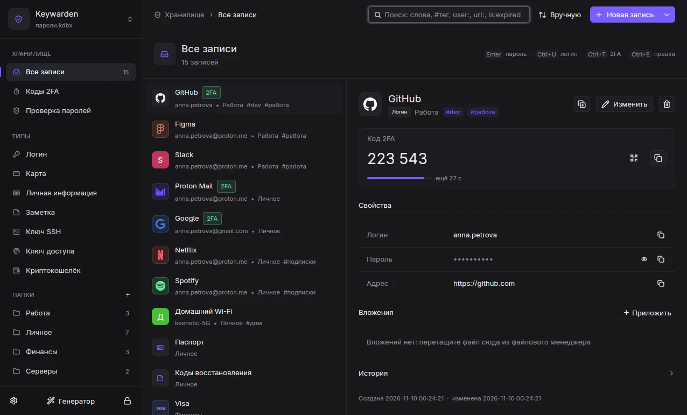

Пароли, коды 2FA и ключи SSH в одном файле KeePass
Менеджер паролей для Linux, Windows и macOS. Файл остаётся вашим: его открывают KeePassXC, KeePassDX и KeePassium, а синхронизирует ваша папка, а не наш сервер.
Лаунчер открывается поверх любого окна. От нажатия до пароля в буфере меньше полсекунды.

Что внутри
Выберите раздел или нажмите цифру от 1 до 6.
Браузер без сюрпризов
Расширение для Firefox и Chrome заполняет логины, подставляет коды 2FA и сохраняет новые пароли. Ключи доступа (passkeys) хранятся в базе в формате KeePassXC.
Встроенный SSH-агент отдаёт ключи из базы ssh, git и IDE, пока база открыта. Серверы с адресом, ProxyJump и port knocking хранятся в базе и едут на другие компьютеры.
Keywarden против каждой из популярных программ, по пунктам, которые можно проверить. Где выигрывает соперник, так и написано.
Keywarden
KeePassXCBitwarden1Password
Где хранятся данные
✓файл у вас
✓файл у вас
~их сервер или свой
~их сервер
Формат
✓KDBX 4, открытый
✓KDBX 4, открытый
~свой, экспорт в JSON и CSV
~свой, экспорт в 1PUX и CSV
Цена
✓бесплатно
✓бесплатно
✓бесплатно, премиум за деньги
~подписка
Исходный код
✓открыт, GPL-3.0
✓открыт, GPL
✓открыт
✕закрыт
Синхронизация
~ваша папка: Syncthing, Nextcloud, Dropbox
~ваша папка
✓встроенная
✓встроенная
Телефон
~через KeePassDX или KeePassium
~через KeePassDX или KeePassium
✓своё приложение
✓своё приложение
Лаунчер поверх окон
✓да, из любого окна
~нет, есть автоввод
✕нет
✓Quick Access
Общий доступ семье или команде
✕нет
✕нет
✓есть
✓есть
=
Тот же файл, другой подход. KeePassXC зрелее и проверен годами. Keywarden берёт клавиатурой и мелочами: лаунчер поверх окон, страница кодов 2FA, серверы SSH в базе. Пользоваться можно обоими по очереди.
Берите Bitwarden, если нужен общий доступ семье или команде и своё приложение на телефоне. Keywarden, если не хотите, чтобы база жила на чьём-то сервере.
1Password отполирован и умеет делиться паролями, но это подписка, закрытый код и их сервер. Keywarden бесплатен и хранит всё у вас в открытом формате.
Да, без конвертации. Keywarden пишет тот же KDBX 4, и KeePassXC продолжает её открывать. Можно пользоваться обоими по очереди.
2Что будет, если я перестану пользоваться Keywarden?
Ничего не потеряется: файл остаётся обычной базой KeePass, его откроет любой клиент KeePass. Привязки к нам нет.
3Почему не облако?
Чтобы пароли не лежали на чужом сервере, который могут взломать или закрыть. Синхронизацию делает папка, которую вы выбираете сами, и туда попадает только зашифрованный файл.
4Windows и macOS готовы?
Работают, но пока в статусе бета: основное проверено, часть функций (YubiKey, значок в строке меню на macOS) ещё обкатывается. На Linux проверено всё.
5Сколько это стоит?
Нисколько. Keywarden распространяется под GPL-3.0, исходники открыты, подписок и платных функций нет.
Приходите со своим файлом KeePass
Откройте базу, которая у вас уже есть, или создайте новую за минуту.